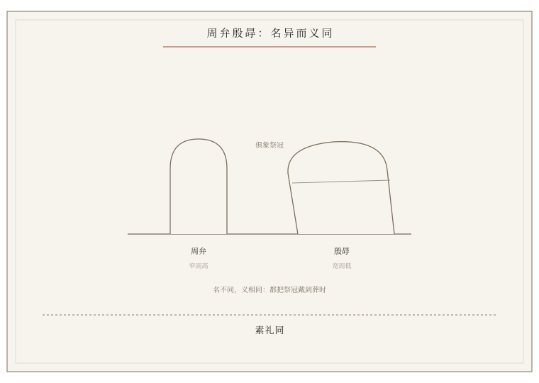

檀弓下 · 四·二十三 · 第 348 课
周人弁而葬，殷人冔而葬。
说什么事：周人下葬戴弁，殷人下葬戴冔。
落在哪一层：以「冠」量代。论「两代之别，在一顶冠的名字」。
为何编在此位：上节论葬时之绖，此节论葬时之冠。同为一处「不纯凶」的细节。
【经】周人弁而葬，殷人冔而葬。
【注】周弁、殷冔，俱象祭冠，而素礼同也。
【疏】《士冠礼》：「周弁，殷冔，夏收。」《王制》云：「夏后氏收而祭，殷人冔而祭，周人弁而祭。」此弁既对冔，故知俱象祭冠。
弁 周人之冠。此指葬时所戴，即素弁。
冔 殷人之冠。「冔」读如吁，其形较弁为宽。
象祭冠 仿照祭时之冠。
素礼同 用素（不饰）这一点相同。
周人下葬时戴弁，殷人下葬时戴冔。
此章两句，记一异一同一异者，冠之名；同者，冠之义。
注一句点破：「俱象祭冠，而素礼同也。」——名不同，义相同：都把祭冠戴到葬时。
第一层 一顶冠，两代的名字 《士冠礼》曰「周弁，殷冔，夏收」，三代各有一冠名。
名不同，而皆用于祭。此见三代之礼，同源而分流：仪节可异，其义常通。
第二层 为何葬要戴祭冠 祭冠是「与神相接」的冠。葬者交神，故亦用祭冠。
三百四十七课言「与神交之道」，此课即以冠实之：不是空说交神，是把祭冠戴到头上。
第三层 「素礼同」三字的分量 疏未详「素」义，而注指出「素礼同」——三代之冠形制不同，而皆去其华饰，用素。
此即礼之「同」：不在形，而在「去饰」这一点上。
后世论礼，多争形制之异；古人论礼，多取用意之同。此章正是一例。
第四层 两代之别，多在细处 《檀弓》屡记殷周之异：或殡之南北，或吊之先后，或主之缀彻。
此章只记一顶冠。而礼之代变，正积于此类细处：一冠之名改，则一代之面目见。
第五层 今日之用：形式的同与异 今人论礼俗，或主张「一律」，或主张「各从所习」。
此章所示，是第三条：形可以异，义不可异。周弁殷冔，各用其冠；而「象祭冠、用素」之义，两代不殊。
与今日何干 今有丧仪，各地各教各俗，冠服不同。此节不说孰是，只说：先问其义是否为一，再论其形是否可存。义同而形异，可并存；义异而形同，则是空壳。
| 左 | 右 |
|---|---|
| 周人弁 | 周之葬冠 |
| 殷人冔 | 殷之葬冠 |
| 俱象祭冠 | 义同 |
| 素礼同 | 去饰这一点相同 |
| 夏收 | 三代之冠名 |
| 名异义同 | 本课之要 |
画两顶冠并置于案上，视点侧面。左冠较窄而高，冠梁一道；右冠较宽而低，冠沿外张。二冠皆素面无纹。二冠之下不画人首，只画案面一线。赭色只用在右冠的冠沿一道。
